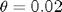
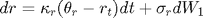

cf2bond
Compute bond prices for an AJD process. Part of the CFH Toolbox.
Syntax
[P Y] = cf2bond(tau,x0,K0,K1,H0,H1,R0,R1) [P Y] = cf2bond(tau,x0,K0,K1,H0,H1,R0,R1,L0,L1,jump) [P Y] = cf2bond(tau,x0,K0,K1,H0,H1,R0,R1,L0,L1,jump,N)
Given an affine jump-diffusive process (see theory for details), cf2bond recovers bond prices P and corresponding yields Y for all maturities defined in tau by computing CF(0). Any AJD process parameters not required can be left empty [].
[P Y alpha beta] = cf2bond(tau,x0,K0,K1,H0,H1,R0,R1,L0,L1,jump)
Returns the and values, see Theory for details.
Input Arguments
tau is a (1 x T) vector of desired times to maturity. The other inputs must relate to x0 or be empty []. R0,R1 are scalars, K0, R1, L1 are of dimension (N x 1), H0, K1 are of dimension (N x N), H1 is a tensor (N x N x N). The number of jump components NJ is defined either by the length of L0 or the number of columns in L1. JUMP is the momentgenerating function of the jump distribution(s), expecting (NX)x(K) and returning (1)x(K).
N is an optional argument that controls the number of time steps per year and thus the accuracy of the result. The default value is N=200.
Contents
Example 1: Vasicek interest rate
Assume the interest rate follows a univariate Vasicek process:
Let us set , , =0.02 and the initial rate :
kappa = 0.85; theta = 0.02; sigma = 0.02; r0 = 0.03;
In terms of the process parameters, this yields K0= , K1= , H0= , R1=1. All other parameters are empty.
K0 = kappa*theta; K1 = -kappa; H0 = sigma^2; tau = (1/52:1/52:10)';
The resulting yield curve is:
[~, Y] = cf2bond(tau,r0,K0,K1,H0,[],[],1); plot(tau,Y) title('Vasicek yield curve'); xlabel('time to maturity'); ylabel('annualized yield');
Example 2: Credit risk with jumps
Here, we assume that the risk-free interest rate follows a Vasicek process, whereas the credit risk process is of the Cox-Ingersoll-Ross (CIR) type. The credit risk process features exponentially distributed jumps with mean and stochastic intensity , which is again of the CIR type.

The corresponding jump transform is
Let us initialize the dynamics at
x0 = [0.03 0.02 0.05]'; mu = 0.05; jump = @(c) 1./(1-c(2,:).*mu); kappa = [0.85 0.85 1]'; theta = [0.02 0.03 0.1]'; sigma = [.02 0.07 0.2]';
These values translate to the AJD coefficient matrices:
K0 = [kappa.*theta]; K1 = diag(-kappa); H0 = zeros(3,3); H0(1,1) = sigma(1)^2; H1 = zeros(3,3,3); H1(2,2,2) = sigma(2)^2; H1(3,3,3) = sigma(3)^2; L1 = [0 0 1]';
The resulting yield curve can be decomposed into three components. If we set R1=[1 0 0] and L1=[0 0 0] we obtain the Vasicek yield curve from above. If we set R1=[1 1 0] and L1=[0 0 0], the resulting yield is the combination of risk-free rate and credit risk (without jumps). Finally, R1=[1 1 0] and L1=[0 0 1] results in a yield curve that comprises the risk-free rate, credit risk and jumps in the credit risk intensity:
tau = [1/52:1/52:5]'; [~,Yrf] = cf2bond(tau,x0,K0,K1,H0,H1,[],[1 0 0]',[],[],jump); [~,Ycr] = cf2bond(tau,x0,K0,K1,H0,H1,[],[1 1 0]',[],[],jump); [~,YJ] = cf2bond(tau,x0,K0,K1,H0,H1,[],[1 1 0]',[],L1,jump); plot(tau,[Yrf Ycr YJ]); title('Breakdown of yield components into risk-free rate, credit risk, jump risk'); legend('risk-free','diffusive credit risk','jump diffusive credit risk'); xlabel('time to maturity'); ylabel('compound annualized yield');